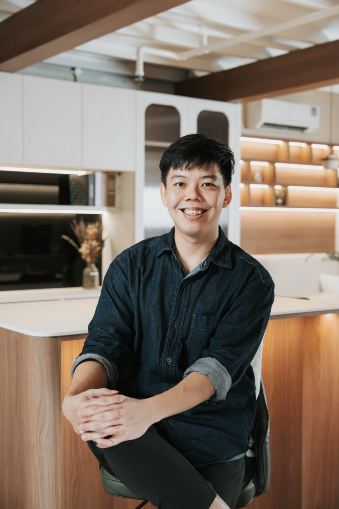

Nathanael
After serving five years in the Singapore Police Force, Nathanael entered the renovation industry, where he has built close to seven years of experience across both interior design firms and a contractor company. This dual exposure gave him a strong understanding of both design execution and on-site realities.
In 2025, he founded Kintsu Interior Studio, driven by a clear vision to bridge the gap between high-quality interior design services and the affordability of contractor-led projects. He believes that good design should not come at the expense of practicality or cost.
Nathanael focuses on creating a balance between aesthetics, functionality, and budget, ensuring that each project translates seamlessly from visual concept to built reality while staying aligned with clients' expectations and means.